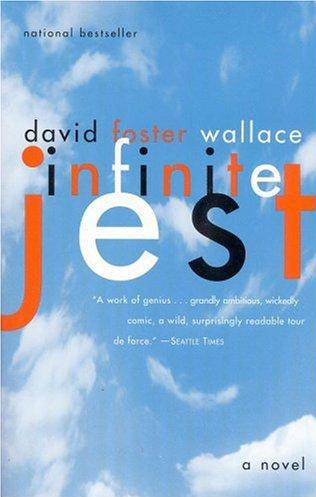

Infinite Jest
I am seated in an office, surrounded by heads and bodies. My posture is consciously congruent to the shape of my hard chair. This is a cold room in University Administration, wood-walled, Remington-hung, double-windowed against the November heat, insulated from Administrative sounds by the reception area outside, at which Uncle Charles, Mr. deLint and I were lately received. I am in here.
What makes all this almost plausible, and often pleasurable, is Mr. Wallace's talent — as a stylist, a satirist and a mimic — as well as his erudition, which ranges from the world of street crime to higher mathematics. While there are many uninteresting pages in this novel, there are not many uninteresting sentences. And there are dozens of set pieces that double as dazzling mini-entertainments — like an essay on the etiquette of videophones and a street brawl between drunken Canadian separatists and a houseful of recovering addicts. Equally lively is Mr. Wallace’s rendition of a New Age 12-step men’s group in which bearded hulks sit in a circle clutching teddy bears that represent their inner infants. “Can you share what you're feeling, Kevin?” asks the group leader. “I'm feeling my Inner Infant’s abandonment and deep-deprivation issues, Harv,” answers a weeping, bearded bear-clutcher. Jay McInerney, New York Times